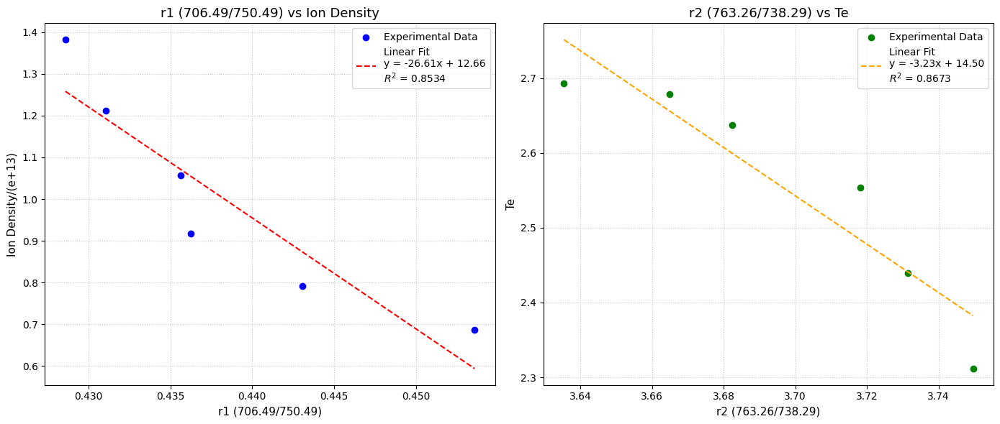
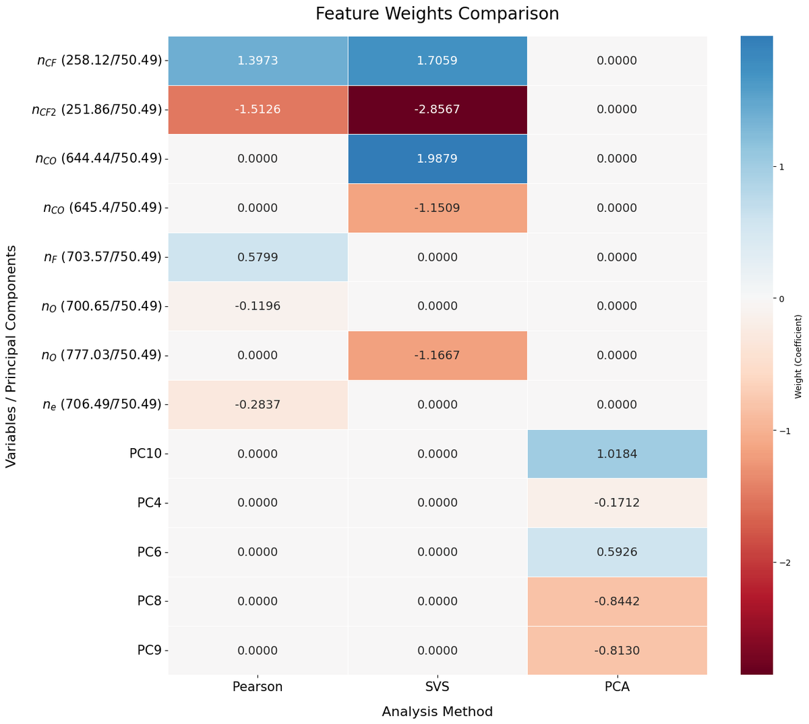
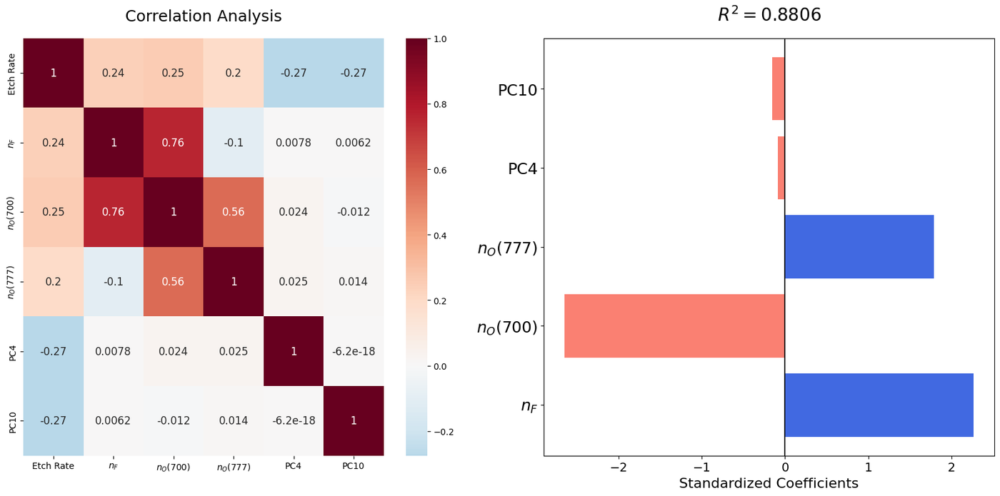

Virtual Metrology for Oxide Etch Rate Prediction URP
성균관대학교 채희엽 교수님 플라즈마 에칭 모니터링 랩실 URP(Undergraduate Research Project). OES·VI 센서 데이터로 SiO2 Etch Rate을 실시간 예측하는 Virtual Metrology(VM) 모델을 구축해, 다중공선성 문제를 완화한 Hybrid 모델로 R²=0.88까지 예측 정확도를 끌어올렸습니다.
개요
반도체 Process이 미세화·3D 구조화되면서 Process 단계가 늘어날수록, 물리적 계측(metrology)의 지연은 즉각적인 Run-to-Run(R2R) Process 제어에 큰 제약이 됩니다. 이 연구는 O2 조건이 변하는 SiO2 플라즈마 Etch Process에서, OES(광방출 분광)와 VI(전압-전류) 프로브 센서 데이터만으로 Etch Rate을 실시간 예측하는 센서 기반 Virtual Metrology 모델을 구축하는 것을 목표로 했습니다.
문제 정의
- O2 조건이 달라질 때마다 SiO2 Etch Rate을 실측하는 데 드는 지연이 즉각적 Process 제어를 어렵게 함
- OES 12개 변수, VI 130개 원자료(10개 파생 변수)를 함께 쓰면 변수 간 다중공선성이 심해 단순 회귀로는 성능이 오르지 않음(Pearson R²=0.7846, SVS R²=0.6953)
- OES 단일 변수 중심 접근(PCA R²=0.8246)만으로는 VI가 담고 있는 미세한 Process 변화가 반영되지 않음
접근 방법
변수 생성
- OES: Actinometry 기법으로 라디칼 밀도 변화(nF, nO, nCO, nCF2, nCF)를 Ar(750.49nm) 발광선 대비 상대값으로 정량화
- OES: Ar Line-ratio 기법으로 전자밀도 ne(706.49/750.49, 상관 −0.92), 전자온도 Te(763.26/738.29, 상관 −0.93) 산출
- VI: 전압·전류·위상·임피던스·파워·반사파워 6개 기본 변수 + Coupling Efficiency, Effective Power 등 조합 변수로 확장

변수 선택 및 모델링
- PCF(Pearson Correlation Filter): 변수 간 1:1 선형 상관성으로 개별 영향력 파악
- SVS(Stepwise Vector/Forward Selection): 전체 데이터셋 학습·평가로 최적 feature 조합 도출
- PCA: 고차원 데이터 행렬을 주성분으로 차원 분해 (OES+VI 결합)
- Hybrid 모델: 지배적 라디칼 밀도 변수(nF, nO 등)를 핵심 변수로 먼저 고정한 뒤, VI 정보가 반영된 저분산 주성분(PC4~PC15)을 추가해 SVS를 재실행 → 단일 기법 의존 시 발생하는 편향·변수 종속성 완화
결과
모델별 결정계수(R²) 비교:
| 모델 | 선택된 변수 | R² |
|---|---|---|
| Pearson | nCF2, nCF, nF, ne, nO | 0.7846 |
| SVS | nCF2, nCO644, nCF, nO, nCO645 | 0.6953 |
| PCA | PC10, PC8, PC9, PC6, PC4 | 0.8246 |
| Hybrid (OES + PC4-15) | 최고 성능 | 0.8806 |
F 라디칼(nF)이 양(+)의 가중치로 가장 큰 영향력을 보여
SiO2(s) + 4F(g) → SiF4(g)↑ + O2(g) 반응 메커니즘과 일치했습니다.
또한 O2 첨가는 이중 효과를 보였는데, nO(777.03nm)는 양(+)의 기여(F 라디칼 해방을
통한 Etch 촉진), nO(700.65nm)는 음(−)의 기여(라디칼 과포화로 인한 활성 부위 차단,
억제 효과)로 나타나 O2 농도에 따른 비선형 거동을 주성분 변수(PC4: macro-scale,
PC10: micro-scale)가 보완적으로 설명했습니다.



고찰 및 후속 연구 제안
단일 기법(Pearson, SVS, PCA)은 각각 OES 편중 선택 또는 변수 간 종속성 문제로 한계가 있었지만, 지배적 화학 인자와 저분산 물리 정보를 함께 반영하는 Hybrid 접근으로 다중공선성 문제를 완화하고 예측 정확도를 R²=0.88까지 끌어올렸습니다. 실무에서 사용할만큼 높은 신뢰도를 가진 모델로 보기는 어렵지만, 주어진 상황(연구실의 샘플 데이터가 적고, Process 일부 변수에 민감한 상황)에서 예측도를 올렸다는 점에서 의의가 있습니다.
결국 플라즈마 내부 반응 메커니즘의 비선형성으로 회귀 계수의 해석 안정성이 떨어지고, 적은 데이터 수로는 딥러닝 적용이 어렵다는 한계가 있었습니다. 후속 연구로는 PCA 기반 변수 선택에 Extreme Learning Machine(ELM)을 결합한 PCA+ELM Hybrid 모델을 제안하며, 이를 통해 Run-to-Run 온라인 학습 기반의 실시간 모니터링 정확도를 더 높일 수 있을 것으로 기대합니다.
배운 점
- 예측 성능의 핵심은 raw data에서 변수를 단계적으로 정제·축소하는 전체 파이프라인에 있다는 것을 배웠습니다. 변수를 무작정 늘리면 과적합과 일반화 성능 저하로 이어지기 때문에, 물리·화학적 의미를 갖는 변수로 먼저 변환한 뒤 필수 변수를 최소 집합으로 확정하는 접근이 중요했습니다
- 플라즈마 SiO2 Etch은 라디칼 생성–표면 반응–부산물 탈착이 연쇄적으로 연결된 반응계이므로, 각 단계(화학적 Etch·물리적 충격·O2의 이중 역할)의 역할을 이해해야 변수 설계가 타당해진다는 것을 느꼈습니다
- Feature selection은 해석과 결론의 타당성을 결정하는 단계이므로, 변수를 왜 만들고 왜 선택·제외하는지 명확히 근거를 정리해야 설득력 있는 보고서가 된다는 점을 배웠습니다